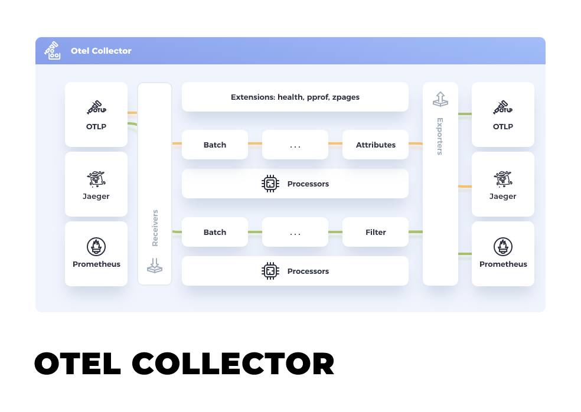
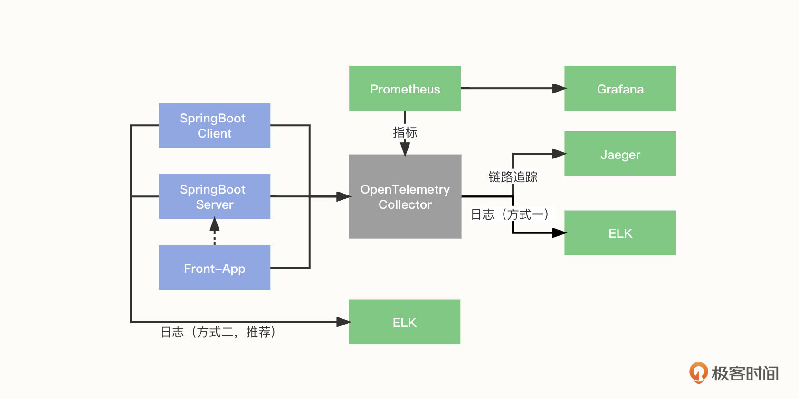
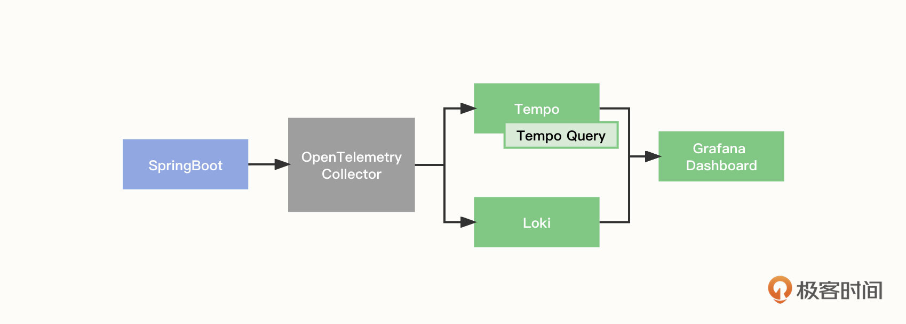
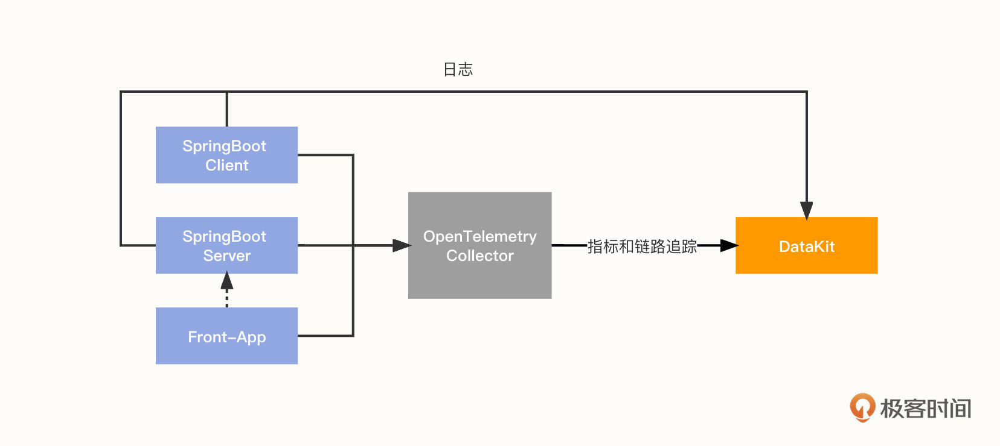
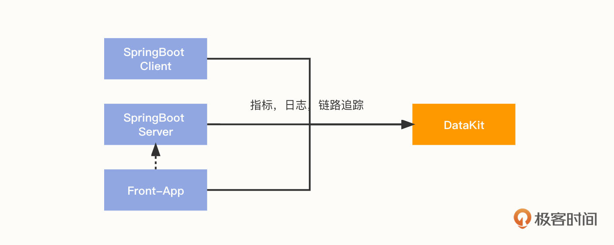

- 00 开篇词 可观测性，让开发和维护系统的你每晚都能睡个好觉！.md.html
- 01 以史鉴今：监控是如何一步步发展而来的？.md.html
- 02 基本概念：指标+日志+链路追踪=可观测性？.md.html
- 03 相互对比：可观测性和传统监控有什么区别？.md.html
- 04 OpenTelemetry：如何利用OpenTelemetry采集可观测数据？.md.html
- 05 构建可观测平台：应该购买商业产品还是自己搭建？.md.html
- 06 团队合作：不同团队如何高效共建可观测性？.md.html
- 07 软件开发：如何利用可观测性进行驱动？.md.html
- 08 建立 SLO：如何为系统可靠性的量化提供依据？.md.html
- 09 跟踪 SLO：如何基于错误预算采取行动？.md.html
- 10 实战 1：从 0 到 1 建立系统应用的可观测性.md.html
- 11 实战 2：基于可观测性数据进行问题分析和根因定位.md.html
- 12 实战 3：构建基于 Kubernetes 的系统可观测性.md.html
- 13 实战 4：建立软件持续集成和发布的可观测性.md.html
- 14 文化建设：如何构建可观测性的文化和框架_.md.html
- 15 展望未来：可观测性在未来的发展趋势是什么？.md.html
- 结束语 在实践中，用科学的方法分析和解决问题.md.html
- 捐赠
04 OpenTelemetry：如何利用OpenTelemetry采集可观测数据？
你好，我是翁一磊。
通过之前概念篇的介绍，相信你已经了解了可观测性的基本概念还有它和传统监控的区别。这节课，我们来看看 OpenTelemetry ，它目前已经是可观测领域非常成熟和热门的标准和规范了。
OpenTelemetry 简介
OpenTelemetry 简称 OTel， 是 CNCF （ Cloud Native Computing Foundation，云原生计算基金会，是一个开源软件基金会，致力于云原生技术的普及和可持续发展） 的一个可观测性项目。
OpenTelemetry 旨在提供可观测性领域的标准化方案，解决遥测数据的数据建模、采集、处理、导出等标准化问题，并能够将这些数据发送到你选择的后端（开源或商业均可）。这样你就可以建立不被供应商锁定的可观测，灵活地更改后端，不需要再次更改代码，重新进行插桩（Instrument）了。
OpenTelemetry 简要历史
OpenTelemetry 不是凭空出现的。在 OpenTelemetry 出现之前，还出现过 OpenTracing 和 OpenCensus 两套标准。
我在第 1 讲监控的历史中，就提到过应用性能监控 APM。目前在这一领域有Jaeger、Pinpoint、Zipkin等多个开源产品，商业玩家也有很多，可谓竞争非常激烈。然而，这也带来了一个问题，那就是每一家都有一套自己的数据采集标准和 SDK，实现上各不相同，很难实现厂商或者技术中立。
OpenTracing 制定了一套与平台和厂商无关的协议标准，让开发人员能够方便地添加或更换底层 APM 的实现。2016 年 11 月，CNCF 接受 OpenTracing 成为第三个项目，前两个相信你早就知道了，就是 Kubernetes 和 Prometheus。
另一套标准 OpenCensus 是谷歌发起的，它和 OpenTracing 最大的不同之处在于，除了链路追踪，它还把指标也包括进来。这样就可以在 OpenCensus 上做基础的指标监控了。后来微软也宣布加入 OpenCensus。
OpenTracing 和 OpenCensus，这两套框架都有很多追随者，而且二者都想统一对方。但是从功能和特性上来看，它们各有优缺点，半斤八两。所谓天下大势，合久必分，分久必合，既然没办法分个高低，那统一就是大势所趋。于是， OpenTelemetry 横空出世。
OpenTelemetry可以同时兼容 OpenTracing 和 OpenCensus，支持各种语言和后端，代表了一种厂商中立的态度，它可以在不改变现有工具的情况下捕获遥测数据并将其传输到后端。
OpenTelemetry 架构
OpenTelemetry 主要包括了下面三个部分：
- 跨语言规范 （Specification）；
- API / SDK；
- 接收、转换和导出遥测数据的工具，又称为 OpenTelemetry Collector。
下面，我们就详细了解一下这几部分。
跨语言规范
跨语言规范描述了所有实现的跨语言要求和数据模型，包括遥测客户端内部实现所需要的标准和定义，也包含与外部通信时需要实现的协议规范。跨语言规范主要包含了下面几类。
- API：定义用于生成和关联追踪、指标和日志的数据类型和操作。
- SDK：定义 API 特定语言实现的要求，同时还定义配置、数据处理和导出等概念。
- 数据：定义遥测后端可以提供支持的 OpenTelemetry 协议 （OTLP） 和与供应商无关的语义约定。
这里要重点说一下这个 OTLP 协议，它的全称是 OpenTelemetry Protocol，它是 OpenTelemetry 原生的遥测信号传递协议，虽然 OpenTelemetry 项目组件支持了Zipkin v2 或 Jaeger Thrift 协议格式的实现，但这种支持都是以第三方贡献库的形式提供的。只有 OTLP 是 OpenTelemetry 官方原生支持的格式。OTLP 的数据模型定义是基于 ProtoBuf 完成的，如果你需要实现一套可以收集 OTLP 遥测数据的后端服务，那就需要了解里面的内容（可以参考代码仓库 opentelemetry-proto）。
API / SDK
API 可以让开发者对应用程序代码进行插桩（Instrument），而 SDK 是 API 的具体实现，是和开发语言相关的。
在软件业内，在应用中进行插桩是指将系统状态数据发送到后端，例如日志或者监控系统。发送的数据叫做 Telemetry，也就是遥测数据，包括日志、指标以及追踪等。这些数据记录了处理特定请求时的代码行为，可以对应用系统的状态进行分析。
插桩有两种方式，一是通过手动增加代码生成遥测数据，二是以探针的方式自动收集数据。
每种方案都有特定的、自定义的步骤来产生和转移符合产品后端存储的遥测数据，这就带来了工具或者厂商的绑定性，如果想把遥测数据发送到其他产品，就不得不使用其他的插件库重复整个插桩过程。而这正是 OpenTelemetry 想要解决的问题。
OpenTelemetry 为每种语言提供了基础的监测客户端 API 和 SDK。这些包一般都是根据前面介绍的规范里的定义，又结合了语言自身的特点，实现了在客户端采集遥测数据的基本能力。
如果直接使用这些 SDK，很多操作需要修改应用代码。例如，添加链路追踪的监测点，记录字段信息等。这种方式具有代码侵入性，使用门槛较高。但另一方面，你也可以使用 OpenTelemetry 公共组件的设计模式或语言特性等来降低使用门槛。插桩的具体方式我就不在这里赘述了，你可以参考 OpenTelemetry 有关插桩的官方文档。
OpenTelemetry Collector
OpenTelemetry 架构的第三部分是接收、转换和导出遥测数据的工具（OpenTelemetry Collector），这是我认为 OpenTelemetry 组件中最重要的部分，之后我们都将其简称为 Collector。
Collector 针对如何接收、处理和导出遥测数据提供了与供应商无关的实现，消除了运行、操作和维护多个代理/收集器的需要，它支持将开源可观测性数据格式（例如 Jaeger、Prometheus 等）发送到一个或多个开源或商业后端。
在 Collector 的内部，有一套负责接收、处理和导出数据的流程被称为 Pipeline。 每个 Pipeline 由下面三部分组件组合而成。
- Receiver：负责按照对应的协议格式监听和接收遥测数据，并把数据转给一个或者多个Processor。
- Processor：负责加工处理遥测数据，如丢弃数据、增加信息、转批处理等，并把数据传递给下一个 Processor 或者一个或多个 Exporter。
- Exporter：负责把数据发送给下一个接收端（一般是指后端），比如将指标数据存储到 Prometheus 中。
Collector 的架构可以参考下面这张示意图：

从部署的角度来说，Collector 有下面两种模式。
- 第一种模式可以统称为 Agent 模式。它是把 Collector 部署在应用程序所在的主机内（在 Kubernetes 环境中，可以使用 DaemonSet），或者是在 Kubernetes 环境中通过边车（Sidecar）的方式进行部署。这样，应用采集到的遥测数据可以直接传递给 Collector。
- 另一种模式是 Gateway 模式。它把 Collector 当作一个独立的中间件，应用会把采集到的遥测数据往这个中间件里传递。
OpenTelemetry 实现方案
接下来，我们看看 OpenTelemetry 的实现方案。OpenTelemetry 有很多种组合和实现方案，我们分别来了解一下 OpenTelemetry 在三种不同技术架构下的使用方式。
OpenTelemetry to 开源工具组合
作为经典的对各种遥测数据的处理架构，开源工具可将不同类型的数据存储在不同的平台，比如日志存放在ELK，追踪存放在 Jaeger 这类的 APM 工具，而指标保存在 Prometheus 并通过 Grafana 进行视图展示。组件的整体配置如下图所示：

我们以一个 SpringBoot 应用为例，解读一下数据采集和传输的过程：
- 应用服务端和客户端将指标、链路追踪数据推送到 Collector；
- Front-app 作为前端链路，将链路追踪信息推送到 Collector，并访问应用服务 API；
- Collector 对数据进行收集和转换后，将数据推送到 Jaeger；
- 同时， Prometheus 从 Collector 拉取数据。
日志有下面两种收集方式。
方式一，通过 OTLP 上报日志：应用服务端和客户端将日志通过 Exporter 推送到 Collector，再通过 Collector 输出到 Elasticsearch。 但由于 OpenTelemetry 在 log 方面还不稳定，所以推荐单独处理日志，不走 Collector。
方式二，通过 Logback 上报日志：应用服务端和客户端将日志通过 Logback 推送到 Logstash（需要使用 Logstash-Logback 组件，是 Logstash 的 Logback 实现）。这是一种更加推荐的方式。
如果对具体的实现方式有兴趣，可以参考这里的样例，这里就不再详细描述了。
OpenTelemetry to Grafana
随着这两年可观测的流行，Grafana 也开始进军可观测行业。使用 Grafana 对接 OpenTelemetry 的架构如下图所示，这里面主要用到 Grafana Tempo 和 Loki 两个组件。

- Grafana Tempo 是一个开源、易于使用且大规模的分布式追踪后端。Tempo 具有成本效益，只需要对象存储即可运行，而且它可以和 Grafana、Prometheus 、 Loki 深度集成。Tempo 可以与任何开源跟踪协议一起使用，包括 Jaeger、Zipkin 、 OpenTelemetry。Tempo 项目于 2020 年在 Grafana 实验室启动，并于 10 月在 Grafana ObservabilityCON 上对外宣布，它是在 AGPLv3 的许可下发布的。
- Loki 是 Grafana Labs 团队最新的开源项目，是一个水平可扩展，高可用性，多租户的日志聚合系统。Loki 的设计非常经济高效且易于操作，因为它不会为日志内容编制索引，而会为每个日志流编制一组标签。这个项目是在 Prometheus 的启发下诞生的，它的官方介绍就是“Like Prometheus, but for logs.”这句话翻译成中文大意是“类似于 Prometheus 的日志系统。”
执行流程主要包括以下 4 步。
- OpenTelemetry 采集输出 Springboot 应用的链路追踪数据，并为对应的日志打上 TraceID、SpanID 等标签。
- Tempo 收集处理 OpenTelemetry 数据并本地化存储，Tempo Query 为 Tempo 的检索后端服务。
- Loki 收集 Springboot 应用的日志数据。
- 最后，我们可以通过 Grafana Dashboard 展示和查看 Tempo 链路追踪和日志数据。
“ Grafana Tempo + Loki” 这个组合能够让我们直观地看到日志链路情况，但 Loki 的特性也决定了它并不能高效分析和处理大型生产系统的日志。日志链路只是可观测的一部分，仅仅通过日志链路查询并不能解决大部分问题，特别是在微服务云原生架构时代，多种多样的问题需要我们结合各方面进行分析。举个例子，用户访问卡顿不一定是程序问题，也有可能是当前系统的网络、CPU 等综合因素导致的。所以，这种方案也有其局限性。
如果对具体的实现方式有兴趣，可以参考这里的样例。
OpenTelemetry to 观测云
我们要聊的最后一种方案是观测云，它是一款专门为 DevOps 团队打造的可观测平台。
观测云允许包括开发、测试、运维在内的所有团队成员在一套统一的可观测数据体系下客观分析与定位故障，便于高效地协作。观测云能够采集指标、链路、日志以及所有的可观测数据，并将它们进行关联和整合分析，实现系统完整的可观测性。（你可以免费注册一个账号，在后面的实战课里跟我一起实战演练。）
观测云的数据采集 Agent 是 DataKit ，它能够支持主机和容器的环境。
- 在主机环境下, 每个主机都有一个 DataKit , 数据会先打给本地的 DataKit , 由 DataKit 缓存，预处理，然后上报到观测云的数据网关。这就在避免了网络抖动的同时，附带了边缘处理能力，缓解了后台处理数据的压力。
- 在Kubernetes 环境下, 每个节点（即 Node）都有一个 DataKit 的 DaemonSet，通过Kubernetes 的 local traffic 机制，每个节点中 Pod 的数据都会先发送本地的 DataKit。这就在避免网络抖动的同时, 为链路追踪数据增加了 Pod 和 Node 标签，能够有效地关联数据。
由于 DataKit 是接收 OTLP 协议的，所以我们可以把 OpenTelemetry Collector 的 Exporter 设置为 OTLP（指向 DataKit），也可以直接将数据打给 DataKit。因此这里有两种方案。
方案一：

方案二：

说明一下。第一种方案：
- 仍然是以一个 SpringBoot 应用为例，应用服务端和客户端将指标、链路追踪数据通过 Exporter 推送到 Collector；
- front-app 作为前端链路，将链路追踪信息推送到 Collector，并访问应用服务 API；
- Collector 对数据进行收集和转换后，将指标和追踪数据通过 Exporter 传输到 DataKit；
- 同时，应用服务端和客户端将日志推送到 DataKit。DataKit 可以通过多种方式采集日志。它支持以 Socket 方式收集日志；而对于 SpringBoot 应用，则主要是通过 Logback-logstash 收集日志。
如果对具体的实现方式有兴趣，可以参考这里的样例。
第二种方案本质上是直接使用观测云的 DataKit 采集数据，这部分内容在接下来的第 10 讲会有更详细的介绍。
小结
好了，这节课就先讲到这里。这节课，我们介绍了目前市场上最热门的 OpenTelemetry。
OpenTelemetry 是发展而来的产物，在它之前，已经出现过 OpenTracing 和 OpenCensus 两套标准，而 OpenTelemetry 对两者进行了统一，它是一整套的规范和工具，能帮助用户建立无厂商锁定的可观测性。
但是需要注意的是，OpenTelemetry 本身不提供后端。这节课，我为你介绍了 3 种不同的后端对接方式，分别是开源工具组合、Grafana 以及观测云，希望能帮助你进一步了解OpenTelemetry 的使用方法。
在下一讲，我们会讨论一个你很可能感兴趣的话题：我们应该自己搭建可观测性（比如使用 OpenTelemetry 以及一些开源或商业后端的组合），还是应该直接购买商业产品呢？你也可以先思考一下这个问题。
思考题
在这节课的最后，留给你一道思考题。
你有没有使用 OpenTelemetry 建立过对系统和应用的可观测性？如果有，可以分享一下你的使用心得。你觉得 OpenTelemetry 带来了哪些便利，又遇到过什么问题？
欢迎你在留言区和我交流讨论，我们下节课见！
© 2019 - 2023 Liangliang Lee. Powered by gin and hexo-theme-book.